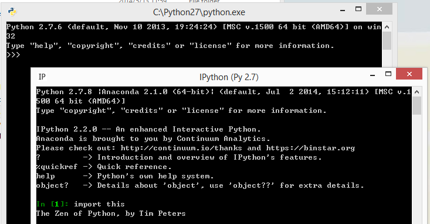
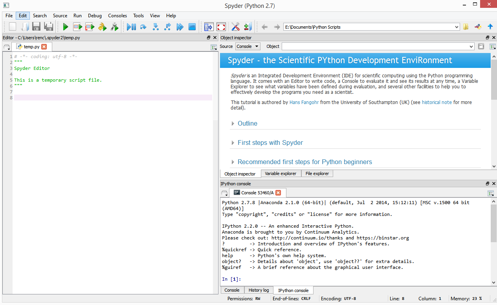

新接触python programming, 记录一些基础.
Batteries Included. 立马就可以使用的. Installizaton
download 2.7 from python website and install at C:\Python27;
download Anaconda 2.1.0 install at E:\Anaconda;

看来两者并不冲突.
这是从Anaconda里面起来的Spyder IDE:

Variables and Data
A variable is a name that points to some specific data type. 不允许声明一个变量而没有=赋值.
contents = 6;
print( type(contents) );
contents = str(contents);
print( type(contents) );
functions: y=float(x), int(), str(), unicode();
import keywork;
for kw in keywork.kwlist: print(kw);
从Python's Data Model来看"variables are just names that point to data", 所有的data都是objects, 每一个object都具有这三者"identity, type, value".
identity 描述的是address in memory.
var = 5;
var = str(var); # 其实是换了不同的object, 只是沿用了var这个名字.
验证:
var = 5;
print( 'int id', id(var) );
var = str(var); #换了type类型了.
print( 'str id', id(var) ); #感觉python value好像c++ pointer.
Python object有一个mutability属性(这算是python data model的一部分?).
mutable objects: can have their values changed( mutated );
immutable: tuples, strings, numbers.
var = 5;
print( 'int id', id(var) );
var = 6; #换了value, 但是type还是number, immutable, 所以是新object.
print( 'int id', id(var) );
Python的data model里面还有用reference counting system to manage its memory.
RC这里的一个side effect是当两个immutable variables, type and value都一样的话, 那可能是指向同一个object(内存地址).
v1 = 10;
v2 = 10;
print( 'v1 id', id(v1) );
print( 'v2 id', id(v2) );
这种情况在mutable上面不会出现, 例如两个list object, type都是list一样了, value也一样的, 但是保证是两个独立的object.
list1 = [1, 2, 3];
list2 = [1, 2, 3];
print('list1 id', id(list1));
print('list2 id', id(list2));
del()这个built-in函数, 只是标记这个variable不能被使用了, 但是那些object data还是被python的garbage collector所管理.
v1 = 5;
v2 = 5; #就是上面提供亮点灵感immutable variable同指向一个object.
del(v1);
print(v1); #NameError
print(v2); #还是有效.
list:
name = [x, y, z, 1, 2, 3];
if ( isinstance(name, list) ):
...
else:
...
if string == "":
pass
if obj is None:
pass
the_file = open('sketch.tex')
do sth with the data in "the_file".
the_file.close()
IDLE:
help(range)
help(isinstance)
References:
Python Practice Book, by Anand Chitipothu.
book, Head First Python, 听说book不错, 适合有编程背景的人去学python.
book, Python Cookbook, 第三版是用python3. 适合有python基础的去看.
PySide Tutorials
A Crash Course in Python for Scientists